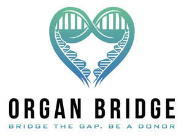
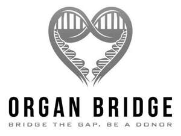

Trade Mark Journal No.2025/030 25 July 2025
UK00004198214 2 May 2025 (35,41,44)
Mark 1

Mark 2

- Class 35
- Compilation, maintenance, updating and administration of computer databases; compilation, maintenance, updating and administration of computer databases of registers of medical donors; advertising for medical donors; donor recruitment drives; medical register administration services; public awareness campaigns.
- Class 41
- Educational, research, training and instructional services relating to health; training and development of medical and non-medical personnel; organisation of seminars, exhibitions and conferences; organisation of seminars, exhibitions and conferences relating to health; publication of books, text, leaflets, reports, magazines and newsletters; organisation of charitable fund-raising events; organisation and staging of sporting leisure, entertainment and social events; organisation of sponsored events; organisation of competitions; organisation of fetes; sports days, parades, carnivals and shows; information, advice and assistance relating to the aforesaid services; organisation of lotteries.
- Class 44
- Medical care services; provision of medical care; medical advisory services; medical care services; medical clinics; medical counselling; medical and medical care information services; provision of information and resource centres in relation to donor recruitment, donor testing, tissue typing, donor matching; information consultancy for healthcare professionals; provision of information on medical matters; services relating to the compilation of a register of medical donors; donor recruitment services; donor testing services; tissue typing services; donor matching services; medical support services; information, advice and assistance relating to the aforesaid services.
Camilla Helly
Representative: Bailey Walsh & Co LLP